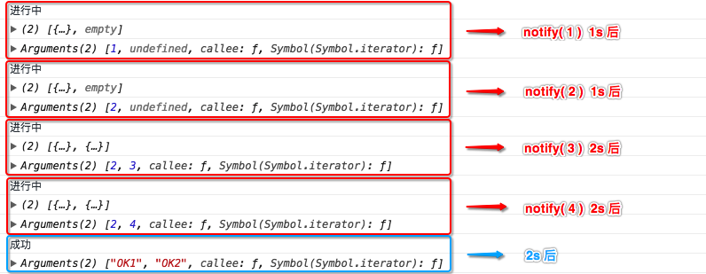
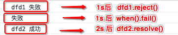

Deferred（ 延迟 ）对象
延迟对象和 ES6 的 Promise 对象类似，都能实现相同的功能，只不过 Promise 的 then 方法在 Defererd 是 done 方法，catch 对应 fail 方法。Deferred 对象是基于 Callbacks 而建立的，所以必须要了解 Callbacks 对象。
有关延迟对象的方法有两个，并且都是通过 jQuery.extend 方法添加的工具方法
- Deferred 方法
- when 方法（ 和
Promise的all方法类似 ）
Deferred 对象一共有三种状态：成功、失败和进行中，要注意的是，在不指定成功或失败的情况下，Deferred 对象的状态都是进行中
Deferred 源码
在 Deferred 方法中，定义了一个状态数组（ 源码中是 tuples ），存储的是三种状态的相关信息
var tuples = [
[ "resolve", "done", jQuery.Callbacks("once memory"), "resolved" ],
[ "reject", "fail", jQuery.Callbacks("once memory"), "rejected" ],
[ "notify", "progress", jQuery.Callbacks("memory") ]
]
可以看出，tuples 数组中包含三个子数组，分别对应三种状态（ 成功、失败和进行中 ）。这里以第一个子数组为例说明各个元素的作用
resolve代表的是指定状态的方法，也就是说，调用resolve方法，可以将Deferred对象的状态指定为成功。done代表的是Deferred对象状态指定后的回调，也就是说，通过resolve方法将Deferred对象的状态指定为成功后，就会调用done方法的参数（done方法的参数是函数 ）。- 第三个元素当前状态的回调对象，每一个状态都有一个独有的回调对象。注意的是，成功和失败的回调对象提供了
once和memory参数，而进行中的回调只提供了memory参数。 - 第四个参数表示的当前状态的状态值。注意的是，进行中的状态是没有状态值的
之后又定义了一个保存当前 Deferred 对象的状态变量，且默认是进行中，即 pending
state = "pending"
然后还会定义一个 promise 对象和 deferred 对象。其中，promise 对象包含五个方法，分别是
statealwaysthenpromisepipe
这里先看promise方法，剩余的后面会说到，先不用管它们promise方法的作用就是，如果直接调用该方法而没有提供参数，那么直接返回上面定义的promise对象；如果提供了参数，那么就调用$.extend方法，将promise对象的所有属性扩展到提供的这个对象上。/** * @param { Object } obj 目标对象 * @return { Object } 目标对象或者 promise 对象 */ promise: function( obj ) { return obj != null ? jQuery.extend( obj, promise ) : promise; }
而 deferred 对象在定义时只是一个空的对象。这里需要知道的是，Deferred 方法的返回值就是这个 deferred 对象。
在定义好 tuples 数组后，会遍历这个数组，并对每个元素执行一个回调
jQuery.each( tuples, function( i, tuple ) {
/**
* 1. 将当前状态的回调对象的引用保存在 list 变量中，再将当前状态的状态值保存在 stateString 变量中
*/
var list = tuple[ 2 ],
stateString = tuple[ 3 ];
/**
* 2. 在 promise 对象中，添加属性，属性名是每个状态数组中的第二个元素，即 done、fail 和 progress。并且这三个属性分别保存的是当前状态回调对象的 add 方法
*/
promise[ tuple[1] ] = list.add;
// 3. 判断当前状态是否存在状态值（ 只有 resolve 和 reject ），如果有的话则进入 if
if ( stateString ) {
/**
* 为当前状态的回调对象添加三个新的回调
* 如果是 resolved 状态
* 回调一：修改 state 变量为 resolved
* 回调二：失败状态（ rejected ）回调对象的禁用方法 disable
* 回调三：进行状态（ progress ）回调对象的锁定方法 lock
* 如果是 rejected 状态
* 回调一：修改 state 变量为 rejected
* 回调二：成功状态（ resolved ）回调对象的禁用方法 disable
* 回调三：进行状态（ progress ）回调对象的锁定方法 lock
*/
list.add(function() {
state = stateString;
}, tuples[ i ^ 1 ][ 2 ].disable, tuples[ 2 ][ 2 ].lock );
}
// 4. 为 deferred 对象添加三个属性，属性名分别是 resolve、reject 和 notify。并将这三个属性值存储为函数对象
deferred[ tuple[0] ] = function() {
/**
* 4.1 调用 deferred 下面的 resolveWith、rejectWith、notifyWith 方法，实际上就是调用
* 回调对象的 fireWith 方法
* 如果调用 resolve、reject 和 notify 方法的对象是 Deferred 的返回值，那么就将回调对象中的所有回调的作用域设置为 promise 对象，并将调用 resolve、reject 和 notify 方法时提供的参数传递过去
*/
deferred[ tuple[0] + "With" ]( this === deferred ? promise : this, arguments );
return this;
};
/**
* 5. 为 deferred 对象添加三个属性，属性名分别是 resolveWith、rejectWith 和 notifyWith。并将这三个属性值存储为当前状态回调对象的 fireWith 方法的引用
*/
deferred[ tuple[0] + "With" ] = list.fireWith;
});
遍历结束后，promise 对象中现在有八个方法（ state、always、then、pipe、promise、done、fail 和 progress ），而 deferred 对象中现在有六个方法（ resolve、reject、notify、resolveWith、rejectWith 和 notifyWith ）
遍历完成之后，就会调用前面说的 promise 对象中的 promise 方法，并将 deferred 对象作为参数
promise.promise( deferred );
这个方法前面说过，如果提供了参数，那么就将 promise 对象中的所有属性添加到 deferred 对象中。所以这个方法调用完成之后，deferred 对象中就含有 14 个方法了，其中 8 个方法是 promise 对象中的方法。
然后，会处理调用 $.Deferred 方法时传递参数的情况
if ( func ) {
func.call( deferred, deferred );
}
可见，这个参数必须是一个函数，这个参数一般很少用到，只在 promise 对象中的 then 方法会用到，之后看到 then 方法时再详细看这个处理情况。
最后，直接返回 deferred 对象
总结一下 Deferred 对象
- 延迟对象
Deferred一共有三种状态，并且每种状态都会有一个独立的回调对象，每个状态都是操作自己的回调对象。 done、fail和progress其实就是回调对象的add方法。resolveWith、rejectWith和notifyWith其实就是回调对象的fireWith方法resolve、reject和notify方法在内部调用的就是resolveWith、rejectWith和notifyWith，相当于回调对象对外提供的fire方法
示例一：Deferred 基本使用（ 一 ）
// 获取延迟对象
const dfd = $.Deferred();
// 模拟异步操作
setTimeout(() => {
/**
* 在 2s 后将延迟对象的状态指定为成功
* 前面说过，resolve 方法相当于回调对象对外提供的 fire 方法，其内部调用的就是 resolveWith（ 也就是成功状态回调对象的 fireWith 方法 ），所以会遍历成功状态回调对象中的所有回调
* 这里要注意的是，在 Deferred 方法遍历状态数组 tuples 中，会分别向成功和失败的回调对象中添加三个方法
* 在这个例子中，因为调用的 resolve 方法，所以看成功状态的回调
* 在 Deferred 方法执行完成后，成功状态的回调对象已经有三个回调了，分别是
* 1. 将 state 变量修改为字符串 resolved
* 2. 失败状态回调对象的禁用方法
* 3. 进行状态回调对象的锁定方法
* 所以此时执行 resolve 方法时，会先执行上面说的三个回调，然后才会执行 done 方法添加的回调
* 第一个回调，将 state 设置为字符串 resolved，可以通过 state 方法验证
* 第二个回调，禁用失败状态的回调对象，所以之后再调用 reject 或者 rejectWith 都没用了
* 第三个回调，此时只是调用 lock 方法将进行状态的回调对象锁定，但是，虽然进行状态的回调对象提供了 memory 参数，但是 memory 变量只会在回调对象内部的 fire 方法才会改变
* 而此时并没有调用 notify 或者 notifyWith 方法，所以 memory 变量是 false，还是会将进行状态的回调对象禁用
* 之后再调用 notify 或者 notifyWith 也没有用
*/
dfd.resolve( 1 );
dfd.reject( 2 ); // 已经无效
dfd.notify( 3 ); // 已经无效
}, 2000);
/**
* 前面说过，done 方法也就是回调对象的 add 方法，所以这里调用 done 方法，实际上调用的是成功状态中回调对象的 add 方法，调用完成后，成功状态的回调对象中就含有一个回调了
* 同理，fail 和 progress 方法也是一样，分别向失败状态的回调对象和进行状态的回调对象里添加一个回调
*/
dfd.done(value => {
console.log( '成功 —— 2s 后执行, 参数是' + value );
});
dfd.fail(value => {
console.log( '失败 —— 2s 后执行, 参数是' + value );
});
dfd.progress(value => {
console.log( '进行中 —— 2s 后执行, 参数是' + value );
});
示例二：Deferred 基本使用（ 二 ）
const dfd = $.Deferred();
setTimeout(() => {
/**
* 此时，首先调用 notify 方法，不会改变 Deferred 对象的状态（ 默认为进行中 ），所以会遍历进行中状态的回调对象，调用其中的每一个回调方法
* 而要注意的是，和成功/失败不同，进行中状态的回调对象此时只有一个回调，就是第 40 行通过 progress 方法添加的回调，在这之前，进行中状态的回调对象中是没有任何回调方法的
* 而且，进行中状态的回调对象时没有一个 once 参数的，所以，在指定 Deferred 对象的状态为成功/失败之前，可以无限制的调用 notify 或者 notifyWith 方法，来执行其回调对象中的所有回调
* 这也符合了所说，Deferred 对象的状态只能指定为成功或失败，且指定后再无法恢复
* 而在指定成功或失败后，就无法再改变其状态了，原理如同示例一中所解释的那样
*/
dfd.notify( 1 ); // 打印 进行中 —— 参数是：1
dfd.notify( 2 ); // 打印 进行中 —— 参数是：2
dfd.resolve( 3 ); // 打印 成功 —— 参数是：3
dfd.notify( 4 ); // 无效
dfd.reject( 5 ); // 无效
}, 2000);
/**
* 分别向 Deferred 对象的成功、失败和进行中状态的回调对象添加了一个回调方法
*/
dfd.done(value => {
console.log( '成功 —— 参数是：' + value );
});
dfd.fail(value => {
console.log( '失败 —— 参数是：' + value );
});
dfd.progress(value => {
console.log( '进行中 —— 参数是：' + value );
});
示例三：Deferred 基本使用（ 三 ）
// 获取 Deferred 对象
const dfd = $.Deferred();
// 模拟异步操作
setTimeout(() => {
// 2s 后将 Deferred 对象的状态指定为失败
dfd.reject();
}, 2000);
/**
* 链式操作，向各个状态的回调对象中添加回调
* 之所以可以链式调用，是因为此时将回调对象中的 add 方法的引用分别保存在了 done、fail 和 progress 属性中
* 而此时再调用 done、fail 和 progress 方法的话，其中的 this 就不再指向原来的对象了，因为在非箭头函数中，一个方法的 this 指向取决于调用它的环境
* 此时，调用 add 方法的是 Deferred 对象，所以其中的 this 就指向的是 Deferred 对象（ 即 dfd 变量 ），所以 done、fail 和 progress 方法的返回值都是 dfd，可以进行链式调用
*/
dfd
.done(() => {
console.log( '成功' );
})
.fail(() => {
console.log( '失败' );
})
.progress(() => {
console.log( '进行中' );
});
Deferred 中的 promise 对象 —— state 方法
前面只看了 promise 对象中的 promise 方法，现在来看剩下的几个方法。第一个是 state 方法，这个调用这个方法可以获取到当前 Deferred 对象的状态值。
如果指定了状态，则为 resolved 或者 rejected，如果没有，则为 pending
/**
* 获取当前 Deferred 对象的状态值
* @return { String } Deferred 对象的状态值
*/
state: function() {
return state;
}
从源码中可以看出，这个方法非常简单，只是返回了 state 的值
示例一：state 方法使用
const dfd = $.Deferred();
setTimeout(() => {
/**
* 此时，因为将 dfd 的状态指定为成功，而成功状态的回调对象已经存在四个回调了
* 第一个回调就是改变状态 state 的回调，所以之后的回调拿到的 state 都是改变后的值，即 resolved
* 所以第 18 行拿到的状态值是 resolved
*/
dfd.resolve( [ 1, 2, 3 ] );
}, 2000);
/**
* 因为 2s 后才会指定状态，所以在那之前，dfd 的状态都是 pending
*/
console.log( dfd.state() ); // pending
dfd.done(data => {
console.log( dfd.state() ); // resolved
console.log( '成功 —— 参数是如下：' );
console.log( data );
});
Deferred 中的 promise 对象 —— always 方法
这个方法从名称上就可以看出，总是会执行。也就是说，不过 Deferred 的状态如何，只要指定了成功或失败，就会执行 always 方法添加的回调。
always: function() {
deferred.done( arguments ).fail( arguments );
return this;
}
从源码中可以看到，always 方法其实调用的是 done 和 fail 方法（ 也就是回调对象 add 方法 ），分别向成功状态的回调和失败状态的回调添加指定的回调方法。所以不管将 Deferred 的状态指定为成功还是失败，都会执行添加的回调。既然调用的是回调对象的 add 方法，那么参数就有以下几种形式
- 参数列表
- 包含回调的数组/类数组
示例一：always 基本使用
const dfd = $.Deferred();
setTimeout(() => {
// dfd.resolve( '成功' ); // 放开这行注释，Deferred 对象被指定为成功，第 10 行打印 成功
// dfd.reject( '失败' ); // 放开这行注释，Deferred 对象被指定为失败，第 10 行打印 失败
}, 2000);
dfd.always(value => {
console.log( value );
});
Deferred 中的 promise 对象 —— promise 方法
promise 方法前面已经看过了，非常简单，现在来看看为什么要存在这样一个方法
经过前面的源码已经知道，promise 对象和 deferred 对象之前的区别就在于缺少六个方法（ resolve、reject、notify、resolveWith、rejectWith 和 notifyWith ）。而这六个方法的作用恰恰是可以改变 Deferred 对象状态的方法。所以，promise 对象和 deferred 对象的根本区别就在于，promise 对象不能改变延迟对象的状态，而 deferred 对象可以。
示例一：不使用 promise 方法
/**
* 这个例子中换一种写法，我们用一个方法来获取到 Deferred 对象
*/
function getDfd () {
const dfd = $.Deferred();
setTimeout(() => {
/**
* 2s 后将 Deferred 对象的状态指定为成功
* 因为这是异步操作，所以在之前可能已经将 Deferred 对象的状态改变了，那么现在再改变就没有用了
* 在这个例子中，第 34 行已经将 Deferred 对象的状态指定为了失败，那么异步操作中再指定成功是没有用的
* 此时就说明，Deferred 对象的状态容易被外界修改的
*/
dfd.resolve( 1 );
}, 2000);
return dfd;
}
const dfd = getDfd();
dfd
.done(data => {
console.log( '成功 —— 参数是 ' + data );
})
.fail(data => {
console.log( '失败 —— 参数是 ' + data );
});
dfd.reject( 2 );
// Result:
// 立即打印: 失败 —— 参数是 2
如果我们想要确保 Deferred 对象在外界不会将其状态改变，只会在异步操作中才能改变状态，可以修改 getDfd 方法
示例二：使用 promise 方法
/**
* 这个例子中换一种写法，我们用一个方法来获取到 Deferred 对象
*/
function getDfd () {
const dfd = $.Deferred();
setTimeout(() => {
/**
* 2s 后将 Deferred 对象的状态指定为成功
* 因为这是异步操作，所以在之前可能已经将 Deferred 对象的状态改变了，那么现在再改变就没有用了
* 在这个例子中，第 34 行已经将 Deferred 对象的状态指定为了失败，那么异步操作中再指定成功是没有用的
* 此时就说明，Deferred 对象的状态容易被外界修改的
*/
dfd.resolve( 1 );
}, 2000);
return dfd.promise();
}
const dfd = getDfd();
dfd
.done(data => {
console.log( '成功 —— 参数是 ' + data );
})
.fail(data => {
console.log( '失败 —— 参数是 ' + data );
});
dfd.reject( 2 );
// Result:
// 2s 后打印: 成功 —— 参数是 1
示例二和示例一唯一的区别就在于，getDfd 方法的返回值是 dfd.promise()。在 promise 方法的源码中，如果不提供参数的话，那么就会返回 promise 对象。所以，第 21 行的 dfd 其实是 dfd 的 promise 对象。而 promise 对象中是不存在改变状态的那 6 个方法的，所以第 31 行是不会改变 Deferred 的状态，反而还会报错，因为 promise 对象宏不存在 reject 方法
Deferred 中的 promise 对象 —— then 方法
这个方法可以被当做是 done、fail 和 progress 的合集方法。
/**
* 接受三个参数，分别是成功时的回调，失败时的回调和进行中的回调
*/
then: function( /* fnDone, fnFail, fnProgress */ ) {
/**
* 1. 保存 arguments 对象的引用到 fns 变量中
*/
var fns = arguments;
/**
* 2. then 方法会返回一个新的延迟对象，并将一个函数作为参数传进去。该函数的参数（ newDefer ）就是新返回的这个延迟对象
*/
return jQuery.Deferred(function( newDefer ) {
/**
* 2.1 这个函数中，遍历了 tuples 数组三次
*/
jQuery.each( tuples, function( i, tuple ) {
/**
* 2.1.1 每次遍历，首先判断 then 的第 1、2、3 个参数是否是函数，如果是的话，将其引用保存在 fn 变量中，并将指定延迟对象状态的方法（ resolve、reject 和 notify ）字符串保存在 action 变量中
*/
var action = tuple[ 0 ],
fn = jQuery.isFunction( fns[ i ] ) && fns[ i ];
/**
* 2.1.2
* 注意：此处的 deferred 变量就是 then 方法的调用者延迟对象（ 称其为 dfd 变量 ）
* 调用了 dfd 的 done、fail 和 progress 方法，分别向 dfd 的三个状态的回调对象添加了一个新的回调
* 这个新的回调中所做的功能都一样，只有一点不一样，就是每次调用的 fn 方法不同
* 如果是调用 dfd 的 done 方法，那么在新回调中就会调用 then 的第一个函数参数
* 如果是调用 dfd 的 fail 方法，那么在新回调中就会调用 then 的第二个函数参数
* 如果是调用 dfd 的 progress 方法，那么在新回调中就会调用 then 的第三个函数参数
* 调用完之后，会将其返回值保存在 returned 变量中，此时会判断返回值是否是一个延迟对象
* 如果是的话，那么向返回的延迟对象的每个状态添加 then 返回的延迟对象的 rsolve、reject 和 notify 方法
* 也就是说，当参数中返回的延迟对象的状态被指定为什么，那么 then 返回的延迟对象的状态也就被指定为什么
* 如果不是的话，那么就会将 then 返回的延迟对象的状态指定为和 dfd 相同的状态（ 通过 action 变量 ）
*/
deferred[ tuple[1] ](function() {
var returned = fn && fn.apply( this, arguments );
if ( returned && jQuery.isFunction( returned.promise ) ) {
returned.promise()
.done( newDefer.resolve )
.fail( newDefer.reject )
.progress( newDefer.notify );
} else {
newDefer[ action + "With" ]( this === promise ? newDefer.promise() : this, fn ? [ returned ] : arguments );
}
});
});
fns = null;
}).promise();
}
示例一：基本使用，当作 done、fail 和 progress 的合集方法
const dfd = $.Deferred();
/**
* 2. 2s 后，将 dfd 的状态指定为成功（ 失败、进行中 ），此时，会遍历成功（ 失败，进行中 ）状态回调对象中的所有回调（ 此时，成功（ 失败 ）的回调对象中存在四个回调，初始化时的三个 + then 方法中添加的一个，而进行中的回调对象只存在 then 方法中添加的一个 ），前三个不用看，主要看第四个（ 进行中看第一个 ）
* 在执行第四个（ 进行中是第一个 ）回调的时候，会立即执行 then 方法的第一（ 二、三 ）个函数参数
* 此时将 then 中的每个函数参数的作用域设置为 dfd 的 promise 对象，并将调用 resolve、reject 和 notify 方法时传递的参数也传递给 then 中的每个函数
*/
setTimeout(() => {
dfd.notify( 3 ); // 打印: 进行中 3
// dfd.resolve( 1 ); // 放开这行注释，会打印: 成功 1
// dfd.reject( 2 ); // 放开这行注释，会打印: 失败 2
}, 2000);
/**
* 1. 在执行 then 方法中，又向 dfd 延迟对象的三种状态的回调对象中又分别添加了一个新的回调
* 其中，这个新的回调在成功状态里会调用第一个函数参数，在失败状态里会调用第二个函数参数，在进行状态里会调用第三个函数参数
*/
dfd.then(
function ( data ) { console.log( '成功 ' + data ) },
function ( data ) { console.log( '失败 ' + data ) },
function ( data ) { console.log( '进行中 ' + data ) }
);
示例二：then 方法的参数函数的返回值不是延迟对象
const dfd = $.Deferred();
setTimeout(() => {
dfd.resolve( 1, 2 );
}, 2000);
/**
* 在执行 then 方法中，又向 dfd 延迟对象的三种状态的回调对象中又分别添加了一个新的回调
* 其中，这个新的回调在成功状态里会调用 then 的第一个函数参数，在失败和进行状态里不会调用，因为调用 then 方法只传递了第一个参数
* 2s 后，将 dfd 的状态指定为成功，所以会遍历成功状态里的四个回调，主要看第四个
* 在第四个回调中，首先会调用 then 的第一个函数参数，并且该函数参数的返回的值是一个字符串（ 1-2 ），所以会进入 45 行的 else 中，将 then 返回的延迟对象的状态也指定为成功
* 并且，将 then 返回的延迟对象成功状态里的每个回调的作用域设置为了 then 返回的延迟对象的 promise 对象，然后将 then 方法中第一个参数的返回值放进数组中，传递给每个回调
*/
const thenDfd = dfd.then(
function ( value1, value2 ) {
console.log( 'then 成功' );
console.log( value1, value2 ); // 1 2
return value1 + '-' + value2;
}
);
thenDfd.done(function ( data ) {
console.log( this === thenDfd ); // true
console.log( data ); // 1-2
});
示例三：then 方法的参数函数的返回值是延迟对象
/**
* 获取第一个延迟对象，并在 1s 后将其状态指定为成功
*/
function fetchPromise1 () {
const dfd1 = $.Deferred();
setTimeout(() => {
dfd1.resolve( 1 );
}, 1000);
return dfd1;
}
/**
* 获取第二个延迟对象，并在 2s 后将其状态指定为成功
*/
function fetchPromise2 ( state ) {
const dfd2 = $.Deferred();
setTimeout(() => {
dfd2.resolve( 2 );
}, 2000);
return dfd2;
}
const dfd1 = fetchPromise1();
const dfd2 = fetchPromise2();
/**
* 调用 dfd1 的 then 方法，此时就会向 dfd1 延迟对象的三种状态的回调对象中又分别添加了一个新的回调
* 其中，这个新的回调在成功状态里会调用 then 的第一个函数参数，在失败和进行状态里不会调用，因为调用 then 方法只传递了第一个参数
* 1s 后，将 dfd 的状态指定为成功，所以会遍历成功状态里的四个回调，主要看第四个
* 在第四个回调中，首先会调用 then 的第一个函数参数，并且该函数参数的返回的值是一个新的延迟对象（ dfd2 ），所以会进入 40 行的 if 中
* 向这个返回的延迟对象（ dfd2 ）的每个状态添加了一个新的回调，就是 then 返回的延迟对象的 resolve、reject 和 notify 方法
* 2s 后，将 dfd2 的状态指定为成功，就会遍历 dfd2 成功状态的四个回调（ 初始化时的三个 + then 的 if 中的一个 ），主要来看第四个回调
* 调用第四个回调时，其实就是将 then 返回的延迟对象的状态指定为成功（ 调用 resolve 方法 ）。此时，这 resolve 方法中的 this 就是 dfd2 的 promise 对象并且会收到参数 2
* 在 resolve 方法中，再调用 resolveWith 方法，并将 dfd2.promise() 和 2 当做参数，所以，then 返回的延迟对象中，每个回调的作用域都是 dfd2 的 promise 对象，而且都会收到参数 2
*/
const thenDfd = dfd1.then(function ( data ) {
console.log( data ); // 1s 后打印: 1
return dfd2;
});
thenDfd.done(function ( data ) {
console.log( this === dfd2.promise() ); // 2s 后打印: true
console.log( data ); // 2s 后打印: 2
});
Deferred 中的 promise 对象 —— pipe 方法
其实 pipe 方法就是 then 方法，它们用的是一套代码，之所有 pipe 方法是为了兼容低版本的 jQuery。以为在低版本的 jQuery 中是没有 then 方法的
在源码中，pipe 是这样定义的
promise.pipe = promise.then;
when 源码
when 方法的作用和 ES6 的 Promise 对象的 all 方法类似，而且 when 方法的参数都必须是 Deferred 对象。也就是说，只有当所有的 Deferred 对象的状态都指定为成功时，才会执行 when 方法
因为通常 Deferred 对象都是异步操作，所以 when 方法的主要作用就是当多个异步操作全部结束后，再执行的某些操作。
为了描述清楚，将 $.when 方法返回的延迟对象称为 目标延迟对象
when: function( subordinate /* , ..., subordinateN */ ) {
var i = 0, // 循环变量
resolveValues = core_slice.call( arguments ), // 将 arguments 转换为数组
length = resolveValues.length, // 保存数组的长度
/**
* 1. 保存未完成的延迟对象的个数到 remaining 变量中
* 如果参数的个数不为 1，那么此时未完成的个数就是参数的个数
* 如果参数的个数为 1，那么就要判断这个参数是否是延迟对象（ 通过是否有 promise 方法来判断 ）
* 如果是，那未完成的个数就是 1
* 如果不是，那未完成的个数就是 0
*/
remaining = length !== 1 || ( subordinate && jQuery.isFunction( subordinate.promise ) )
? length
: 0,
/**
* 2. 保存延迟对象
* 如果未完成的延迟对象个数是 1，那么就直接保存该延迟对象的引用
* 如果未完成的延迟对象个数不是 1，那么就新创建一个延迟对象
*/
deferred = remaining === 1
? subordinate
: jQuery.Deferred(),
/**
* 3. 定义 updateFunc 函数，如果参数中存在两个以上的延迟对象，就会将这个函数的返回值添加到参数中的延迟对象的回调对象里
* 这个函数的功能主要由三个
* 修改作用域的集合（ resolveContexts 或者 progressContexts ）
* 修改参数的集合（ resolveValues 或者 progressValues ）
* 判断对参数中的延迟对象，将其状态指定为成功还是进行中，会有不同的操作
* 当将参数中的延迟对象的状态指定为成功，contexts 就是 resolveContexts，values 就是 resolveValues
* 当将参数中的延迟对象的状态指定为进行中，contexts 就是 progressContexts，values 就是 progressValues
* 最终，这个 contexts 对象就是 $.when 返回的延迟对象中的回调对象里的所有回调的作用域，而 values 则是所有回调接受的参数数组
* @param { Number } i $.when 方法中参数的索引
* @param { Array } contexts 作用域的集合
* @param { Array } values 参数的集合
*/
updateFunc = function( i, contexts, values ) {
return function( value ) {
/**
* 1. 将当前的 this（ $.when 中每个延迟对象的 promise 对象 ）赋给 contexts 以 i 为索引的元素
*/
contexts[ i ] = this;
/**
* 2. 将当前的参数保存在 values 中以 i 为索引的元素，当前的参数就是 $.when 中的每个延迟对象在通过 resolve 或者 reject 方法指定状态时传递的参数
* 判断参数的个数是否大于 1
* 如果大于 1，那么将 arguments 转换为数组，并存在 values 中以 i 为索引的元素中
* 如果小于等于 1，那么将当前的参数 value 存在 values 中以 i 为索引的元素中
*/
values[ i ] = arguments.length > 1
? core_slice.call( arguments )
: value;
/**
* 3. 判断 values 是否等于 progressValues
* 如果参数中的延迟对象将其状态指定为进行中，那么遍历到这个回调的时候，values 就是 progressValues，进入 if，将目标延迟对象的状态指定为进行中，并将目标延迟对象的回调对象中的所有回调的作用域设置为 contexts（ progressContexts ），参数是 values（ progressValues ）
*/
if( values === progressValues ) {
deferred.notifyWith( contexts, values );
}
/**
* 如果参数中的延迟对象将其状态指定为成功或失败，那么遍历到这个回调的时候，就会进入 else if
* 对未完成的延迟对象的个数 remaining - 1，判断其是否等于 0
* 如果是的话，那么就将目标延迟对象的状态设置为 resolved，遍历调用成功状态里的所有回调
*/
else if ( !( --remaining ) ) {
deferred.resolveWith( contexts, values );
}
};
},
progressValues, // 保存进行状态的参数集合
progressContexts, // 保存进行状态的作用域集合
resolveContexts; // 保存成功状态的作用域集合
/**
* 以上三个变量，再加上 resolveValues，总共四个变量，都专门用于 when 方法返回值的 Deferred 对象。当 when 中的所有延迟对象都指定为成功时，
*/
/**
* 4. 处理两个以上参数的情况（ 包括两个 ）
*/
if ( length > 1 ) {
// 用当前参数的个数实例化数组
progressValues = new Array( length );
progressContexts = new Array( length );
resolveContexts = new Array( length );
/**
* 遍历参数数组，判断每个参数是否是一个延迟对象
* 如果是，则向每一个延迟对象的三种状态的回调队列中添加 updateFunc 的返回值（ updateFunc 的返回值也是一个函数 ）
* 如果不是，将未完成的延迟对象的个数 - 1
*/
for ( ; i < length; i++ ) {
if ( resolveValues[ i ] && jQuery.isFunction( resolveValues[ i ].promise ) ) {
resolveValues[ i ].promise()
.done( updateFunc( i, resolveContexts, resolveValues ) )
.fail( deferred.reject )
.progress( updateFunc( i, progressContexts, progressValues ) );
} else {
--remaining;
}
}
}
/**
* 5. 如果未完成延迟对象为 0 了，那么就调用 deferred 的 resolveWith，将延迟对象的状态指定为成功
*/
if ( !remaining ) {
deferred.resolveWith( resolveContexts, resolveValues );
}
/**
* 6. 返回 deferred 的 promise 对象
*/
return deferred.promise();
}
示例一：不传递任何参数
/**
* 此时，因为没有传任何对象，所以 remaining 和 length 都是 0，deferred 是一个新的 延迟对象，会进入 40 行的 if 中，
* 将延迟对象的状态指定为成功，遍历调用其回调对象的所有回调（ 此时成功状态的回调对象依旧是那三个回调 ），并没有新添加的回调
* 然后调用 done 方法向成功状态的回调对象中添加回调，因为成功状态的回调对象提供了 memory 参数，所以新添加的回调会被立即执行
*/
$.when()
.done(() => {
console.log( '已完成' );
});
// Result:
// 立即打印: 已完成
示例二：传递一个非延迟对象的参数
/**
* 此时，因为传递了一个参数（ 且该参数是非延迟对象 ），所以 remaining 是 0 且 length 是 1，deferred 是一个新的 延迟对象，会进入 40 行的 if 中，
* 将延迟对象的状态指定为成功，遍历调用其回调对象的所有回调（ 此时成功状态的回调对象依旧是那三个回调 ），并没有新添加的回调
* 然后调用 done 方法向成功状态的回调对象中添加回调，因为成功状态的回调对象提供了 memory 参数，所以新添加的回调会被立即执行
*/
$.when( 1 )
.done(() => {
console.log( '已完成' );
});
// Result:
// 立即打印: 已完成
示例三：传递多个非延迟对象的参数
/**
* 此时，因为传递了两个参数（ 且参数都是非延迟对象 ），所以 remaining 是 2 且 length 是 2，deferred 是一个新的 延迟对象，会进入 30 行的 if 中，
* 此时遍历每个参数，因为此例中所有的参数都不是延迟对象，所以每遍历一次，就将 remaining - 1，遍历结束后，remaining 的值为 0，会进入 40 行的 if 中，
* 将延迟对象的状态指定为成功，遍历调用其回调对象的所有回调（ 此时成功状态的回调对象依旧是那三个回调 ），并没有新添加的回调
* 然后调用 done 方法向成功状态的回调对象中添加回调，因为成功状态的回调对象提供了 memory 参数，所以新添加的回调会被立即执行
*/
$.when( 1, 2 )
.done(() => {
console.log( '已完成' );
});
// Result:
// 立即打印: 已完成
示例四：传递一个延迟对象
const dfd = $.Deferred();
setTimeout(() => {
// dfd.resolve( 1 ); // 放开这行注释，2s 后打印: 2s 后所有的延迟对象成功 —— 1
// dfd.reject( 2 ); // 放开这行注释，2s 后打印: 2s 后所有的延迟对象失败 —— 2
}, 2000);
/**
* 此时，when 方法传递了一个延迟对象作为参数，remaining 和 length 都是 1，而 deferred 保存的就是该参数的引用，即 deferred 和外部的 dfd 指向同一块内存
* 然后直接返回 deferred，也就是说，此时 when 方法的返回值就是 dfd
*/
$.when( dfd ) // 等同于 dfd
.done(data => {
console.log( '2s 后所有的延迟对象成功 —— ' + data );
})
.fail(data => {
console.log( '2s 后所有的延迟对象失败 —— ' + data );
});
示例五：传递多个延迟对象
const dfd1 = $.Deferred();
setTimeout(() => {
dfd1.resolve( 1 );
}, 1000);
const dfd2 = $.Deferred();
setTimeout(() => {
dfd2.resolve( 2 );
}, 2000);
/**
* 此时，when 方法传递了两个延迟对象，remaining 和 length 都是 2，deferred 变量是一个新的延迟对象
* 然后会进入 87 行的 if 遍历每一个参数，因为每个参数都是延迟对象，所以会向每个延迟对象的三种状态分别添加一个回调
* 此时，resolveContexts、progressContexts 和 progressValues 都是包含两个元素的空数组，而 resolveValues 是包含 dfd1 和 dfd2 的数组
* 此时，dfd1 的成功回调对象中，已经存在三个回调，失败也是三个回调，进行中是没有的（ dfd2 也是一样 ），在遍历过程中，又向 dfd1（ dfd2 ） 的成功、失败和进行中的回调对象添加了一个新的回调
* 这个新的回调是 updateFunc 的返回值，并将 resolveContexts、resolveValues、progressContexts 和 progressValues 当做实参传递，因为在 updateFunc 的返回值方法中要操作这些变量
* 遍历完成之后直接返回 defered 对象中的 promise 对象，然后调用了 done 方法，为这个延迟对象成功状态的回调对象中添加了一个回调
* 在 1s 后，dfd1 的状态被指定为成功，此时会遍历调用成功状态回调对象中的所有回调，前三个已经很清楚了，主要来看第四个，也就是上面遍历过程中添加的回调
* 在这个回调中，this 是 dfd1 的 promise 对象，然后将调用 resolve 或者 resolveWith 方法时传递的参数（ 此例中是 1 ）保存在 resolveValues 中的第一个元素，因为此时调用的是 resolve 方法（ 即指定延迟对象状态是成功 ）所以此时的 values 就是 resolveValues，进入 70 行的 else if 中，对 remaining - 1，之后再判断 remaining 是否是 0（ 现在是 1 ），条件不满足，这个回调就结束了
* 在 2s 后，dfd2 的状态被指定为成功，和 dfd1 一样，我们只看在遍历过程中添加的回调，之前的已经清楚
* 在这个回调中，this 是 dfd2 的 promise 对象，然后将调用 resolve 或者 resolveWith 方法时传递的参数（ 此例中是 2 ）保存在 resolveValues 中的第二个元素，因为此时调用的是 resolve 方法（ 即指定延迟对象状态是成功 ）所以此时的 values 就是 resolveValues，进入 70 行的 else if中，对 remaining - 1，之后再判断 remaining 是否是 0（ 现在是 0 ），条件满足，将 when 方法中的 deferred 的状态指定为成功，并将每个回调的作用域指定为 resolveContexts，并且每个回调的参数是 resolveValues 数组
* 此时，resolveContexts 保存是 dfd1 的 promise 对象和 dfd2 的 promise 的数组，而 resolveValues 保存的是 1 和 2 的数组
*/
$.when( dfd1, dfd2 )
.done(function ( value1, value2 ) {
console.log( '2s 后所有延迟对象都已成功' );
console.log( value1, value2 ); // 1 2
console.log( this ); // [ dfd1.promise(), dfd2.promise() ]
});
示例六：传递多个延迟对象，在指定成功之前先指定进行中
const dfd1 = $.Deferred();
/**
* 2. 1s 后，调用 notify 将 dfd1 的状态指定为进行中，此时，dfd1 进行状态的回调对象中只有一个回调（ 就是 when 方法中添加的回调 ）
* 执行该回调中，progressContexts 是 [ dfd1.promise(), undefined ]，而 progressValues 是 [ 1, undefiend ]，然后判断 values 是否等于 progressValues，因为现在是调用 notify 方法，所以条件成立
* 将目标对象的状态指定为进行中，并将进行中的每个回调的 this 设置为 progressContexts 对象，而每个回调接受的参数就是 progressValues 数组
* 而在此调用 notify 方法和上面一样，只不过此时会将 progressValues[0] 改变为 2，之后再次将目标延迟对象的状态指定为进行中，再一次遍历进行中的所有回调
* 最后调用一次 resolve 方法，遍历 dfd1 成功状态中的所有回调（ 此时有4个回调 ），当遍历到底 4 个的时候
* 将 resolveContexts 设置为 [ dfd1.promise(), undefined ]，再将 resolveValues[0] 设置为 'OK1'，之后进行判断，因为调用 resolve 方法，所以条件不满足，进入 else if 中，将 remaining - 1，调用结束
*/
setTimeout(() => {
dfd1.notify( 1 );
dfd1.notify( 2 );
dfd1.resolve( 'OK1' );
}, 1000);
const dfd2 = $.Deferred();
/**
* 3. 2s 后，调用 notify 将 dfd2 的状态指定为进行中，此时，dfd2 进行状态的回调对象中只有一个回调（ 就是 when 方法中添加的回调 ）
* 执行该回调中，progressContexts 是 [ dfd1.promise(), dfd2.promise() ]，而 progressValues 是 [ 1, 3 ]，然后判断 values 是否等于 progressValues，因为现在是调用 notify 方法，所以条件成立
* 将目标对象的状态指定为进行中，并将进行中的每个回调的 this 设置为 progressContexts 对象，而每个回调接受的参数就是 progressValues 数组
* 而在此调用 notify 方法和上面一样，只不过此时会将 progressValues[1] 改变为 4，之后再次将目标延迟对象的状态指定为进行中，再一次遍历进行中的所有回调
* 最后调用一次 resolve 方法，遍历 dfd2 成功状态中的所有回调（ 此时有4个回调 ），当遍历到底 4 个的时候
* 将 resolveContexts 设置Wie [ dfd1.promise(), dfd2.promise() ]，再将 resolveValues[1] 设置为 'OK2'，之后进行判断，因为调用 resolve 方法，所以条件不满足，进入 else if 中，将 remaining - 1，此时 remaining 为 0，条件成立，将目标延迟对象的状态指定为成功，并将目标延迟对象的成功状态里的所有回调的作用域设置为 resolveContexts，并且每个回调方法都会接受 resolveValues 作为参数
*/
setTimeout(() => {
dfd2.notify( 3 );
dfd2.notify( 4 );
dfd2.resolve( 'OK2' );
}, 2000);
/**
* 1. 调用 when 方法和上一个示例一样，唯一不同的是，现在向目标延迟对象的成功状态回调对象和进行状态回调对象里都添加了一个新的回调
* 要注意的是，when 方法调用完后，dfd1 和 dfd2 的每个状态的回调对象中又新增了一个回调
*/
$.when( dfd1, dfd2 )
.done(function () {
console.log( '成功' );
console.log( arguments );
})
.progress(function () {
console.log( '进行中' );
console.log( this );
console.log( arguments );
});
结果如下

示例七：传递多个延迟对象，指定状态为失败
const dfd1 = $.Deferred();
/**
* 2. 1s 后，dfd1 的状态被指定为失败，此时，dfd1 失败状态的回调对象中存在四个回调（ 初始化时的三个 + when 方法中添加的一个 ），执行前三个回调不用说，主要看第四个回调
* 第四个回调是目标延迟对象的 reject 方法，也就是说，当执行第四个回调的时候，将目标延迟对象的状态指定为失败了，一旦将目标延迟对象的状态指定为失败，那么成功状态的回到就被禁用了。进行中状态的回调就被锁定了（ 因为此时进行状态的回调对象中，fired 的值为 false，所以结果还是将其禁用 ）
* 所以 1s 后，目标延迟对象被指定为失败，会执行目标延迟对象通过 fail 方法添加的回调，即 65 行打印 "失败"
*/
setTimeout(() => {
dfd1.reject( 1 );
dfd1.notify( 2 );
}, 1000);
dfd1
.fail(() => {
console.log( 'dfd1 失败' );
})
.progress(() => {
console.log( 'dfd1 进行中' );
})
.done(() => {
console.log( 'dfd1 成功' );
});
const dfd2 = $.Deferred();
/**
* 3. 2s 后，因为此时目标延迟对象已经被指定为失败，所以其状态无法再改变，所以这句话起不到任何作用
* 但是 dfd2 的状态还是被指定为成功的，所以成功状态里的回调还是会执行，即 50 行会打印 dfd2 成功
*/
setTimeout(() => {
dfd2.resolve( 2 );
}, 2000);
dfd2
.done(() => {
console.log( 'dfd2 成功' );
})
.fail(() => {
console.log( 'dfd2 失败' );
})
.progress(() => {
console.log( 'dfd2 进行中' );
});
/**
* 1. 此时，调用 when 方法传递了两个延迟对象作为参数，所以 length 和 remaining 都是 2，而 deferred 变量是一个新的延迟对象
* 然后进入 84 行的 if 中对每个参数进行遍历，因为每个参数都是延迟对象，所以向 dfd1 和 dfd2 的三种状态中又添加了一个新的回调
* when 方法结束后，又向目标延迟对象的成功和失败状态的回调对象中添加了一个新的回调
*/
$.when( dfd1, dfd2 )
.done(() => {
console.log( '成功' );
})
.fail(() => {
console.log( '失败' );
})
.progress(() => {
console.log( '进行中' );
});
结果如下
